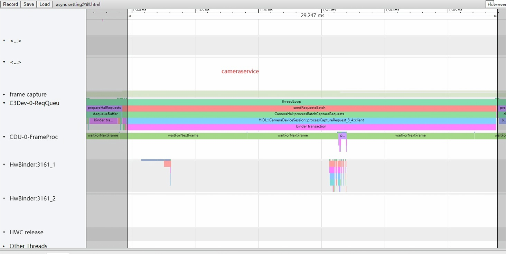

MTKcam-ISP7-enable fast launch
Breakdown
相机的冷/热启动，若从systrace上分析耗时，可以按照cameraservice进程来分5个阶段：
- S1: AppLaunch_dispatchPtr:Up –> connectDevice
点击APP按钮到连接相机，这部分主要是APP和framework的耗时； - S2: connectDevice
连接相机的耗时，对应HAL层的open操作，主要包括遍历sensorlist，加载tuning算法库（并行化的，不需要等上下电），主要是HAL部分耗时 - S3: connectDevice –> endConfigure
CameraDevice callback之后，就可以调用createcapturesession（endConfigure），因此这部分耗时主要来源于APP和framework - S4:endConfigure
对应HAL层的configstream，需要等待sensor上电完成，以及3A初始化，耗时主要是HAL部分 - S5: endConfigure –> first full buffer call back
流配置完成到回帧到APP，需要等待HAL pipeline创建完成，3A计算和吐帧，主要耗时是HAL部分
analysis
breakdown的结果是S5: endConfigure –> first full buffer call back耗时长，流配置完成到回帧到APP，需要等待HAL pipeline创建完成，3A计算和吐帧，主要耗时是HAL部分;
在这个阶段MTK有一个fast lunch功能可以开启
fast launch功能介绍
fast launch又叫Fast Preview，在了解fast launch功能之前，我们首先需要知道request在MTK P1 Node中是如何流转的，具体过程可以参考文档ISP7-P1 node简介 ，里面有相关介绍。
开启fast launch主要时节省了3A相关的计算，使用默认的3A计算结果（一般会是上一次退出相机时的3A计算结果）直接作用在driver，随后等待driver出帧。
SysTrace分析
Normal Request：
cameraservice通过sendRequestsBatch下发quest，正常需要等待P1Node.queue走完之后才会返回：

并且会调用tryEnQ 并进入S_Enque状态，此时需要等待3A相关的计算：

fast launch Request：
这里有3个sendRequestsBatch执行时间特别短，原因就是开启了fast launch功能。我们看来下这些request在HAL中是怎么走的：

request下发到HAL之后并没有等待queue。queue动作在另一个线程中完成：

另外，第一个queue函数执行很长，主要是在等res寄存器的写入。

这里做的实际上是调用preEnQ，进入S_PreQue状态，这里便是核心区别。用preEnQ，进入S_PreQue状态，此时采用默认的3A计算结果（一般会是上一次退出相机时的3A计算结果）直接作用在driver，随后调用setupSubmission ，让 P1Node 将对应的 buffer 给 acquire 出来，并将buffer address给到Camctrl, 等待driver 吐帧。随后的流程和Normal Request一致。
优化方法
通过设置：
adb shell setprop vendor.debug.camera.pass1initrequestnum 4 //可以开启功能4-1=3帧，理论优化耗时3*33=99ms
或者直接在代码里面修改